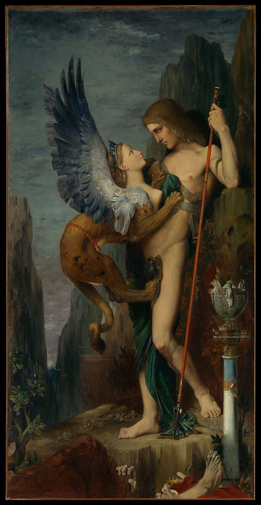
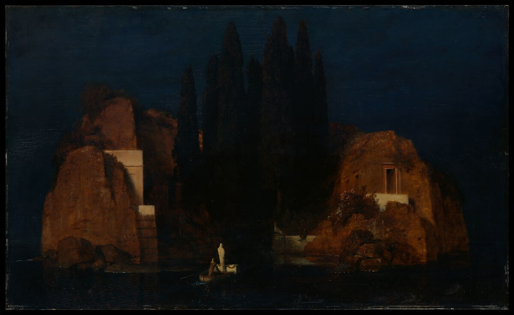
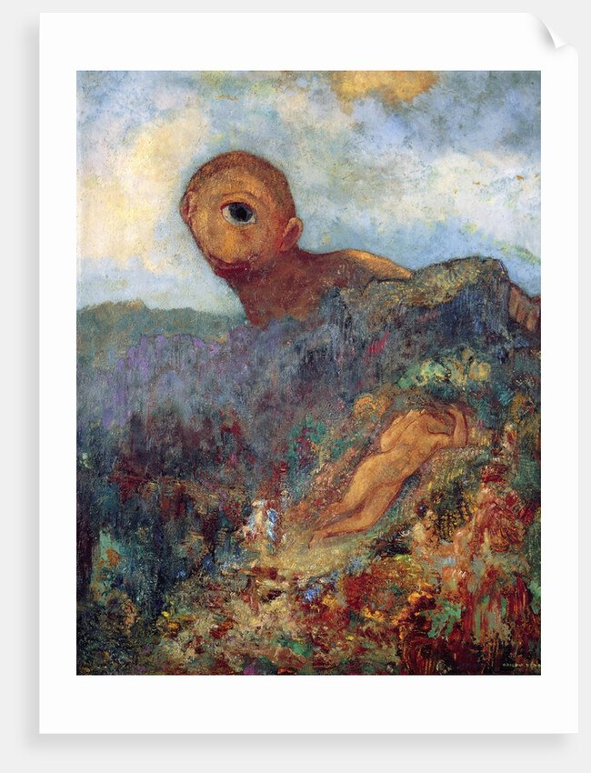
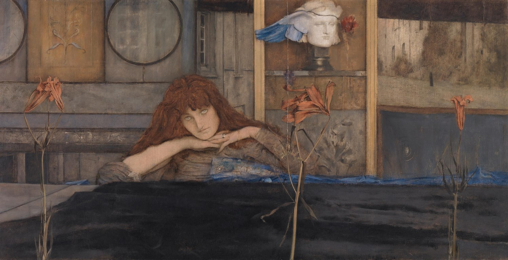

프랑스 · 상징주의의 선구
상징주의(Symbolism)는 19세기 후반 유럽의 문학과 미술에서 전개된 국제적 운동이다. 사실주의와 자연주의가 외부 세계를 관찰하고 묘사하려 했다면, 상징주의는 눈에 보이는 현실만으로는 인간의 정신·욕망·죽음·종교·꿈을 충분히 표현할 수 없다고 보았다. 따라서 신화, 성서, 꿈, 환상, 여성, 밤, 죽음과 같은 이미지를 보이지 않는 생각과 감정을 암시하는 상징으로 사용했다.
상징주의는 하나의 통일된 화풍이라기보다 예술은 눈에 보이는 사물을 복제하는 것이 아니라 그 뒤에 있는 생각·감정·정신적 현실을 암시해야 한다는 태도를 공유한 운동이다. 그래서 화가마다 화면은 매우 다르다.
객관적 자연보다 기억, 욕망, 공포, 신앙, 꿈 같은 내면의 현실을 중시한다.
신화·성서·전설·문학을 개인적인 정신세계의 언어로 다시 사용한다.
사물은 그 자체보다 다른 의미를 불러일으키는 상징이 된다.
논리적인 시공간보다 정지된 시간, 낯선 장소, 환상적 분위기를 선호한다.
한 가지 의미를 설명하기보다 관람자가 연상과 해석을 통해 의미를 완성하게 한다.
관찰·과학·사회현실을 중시하는 문화가 강해진다.
《악의 꽃》에서 감각·도시·욕망·죽음과 서로 호응하는 이미지의 시학을 발전시킨다.
신화를 고대사의 삽화가 아니라 정신적·심리적 대결로 재구성한다.
실제 풍경을 죽음과 저승을 암시하는 꿈의 장소로 바꾼다.
장 모레아스가 프랑스 문학의 Symbolisme을 선언하며 명칭이 이론적으로 확립된다.
프랑스·벨기에·중부유럽·북유럽·러시아 등에서 서로 다른 상징주의가 전개된다.




| 비교 항목 | 사실주의 | 상징주의 |
|---|---|---|
| 핵심 관심 | 동시대 사회와 실제 생활 | 정신·꿈·욕망·신화·죽음·초월 |
| 출발점 | 직접 관찰할 수 있는 현실 | 내면에서 떠오르는 관념과 연상 |
| 주제 | 노동자·농민·도시·일상 | 신화·성서·전설·환상·알레고리 |
| 사물의 의미 | 현실의 구체적 대상 | 다른 의미를 불러오는 상징 |
| 관람자 | 현실을 관찰 | 이미지를 해석하고 연상 |
| 대표 질문 | “사회는 실제로 어떤 모습인가?” | “보이는 현실 뒤에는 어떤 정신적 의미가 있는가?” |
두 사조는 같은 시기에 상당 부분 겹친다. 그래서 고갱 같은 화가는 후기 인상주의이면서 동시에 상징주의적이라고 설명할 수 있다.
자연을 견고한 조형 구조로 다시 만들며 입체주의로 연결된다. 상징주의와의 직접 연관은 상대적으로 약하다.
비자연적 색, 평면화, 종교·신화·기억을 이용하여 눈앞의 관찰보다 관념과 의미를 중시한다.
상징주의는 프랑스에서 명칭과 문학적 이론이 정식화되었지만, 실제로는 유럽 여러 지역에서 매우 다른 모습으로 발전한 국제적 운동이다. 따라서 이 사조는 국가별 차이를 함께 보는 것이 특히 중요하다.
| 국가·지역·세부 사조 | 지역적 특징 | 대표 화가·제작자 |
|---|---|---|
| 프랑스 |
| 귀스타브 모로, 오딜롱 르동, 퓌비 드 샤반 |
| 프랑스 — 벨기에 국제 네트워크 |
| 페르낭 크노프, 제임스 앙소르 |
| 스위스 |
| 아르놀트 뵈클린, 프란츠 폰 슈투크 |
| 독일 — 오스트리아 빈 분리파 |
| 구스타프 클림트 |
| 스웨덴 — 북유럽 심리 상징주의 |
| 에드바르 뭉크 |
| 러시아 |
| 미하일 브루벨, 빅토르 보리소프무사토프 등 |
상징주의는 보이는 현실을 버린 것이 아니라, 현실의 표면만으로는 설명되지 않는 죽음, 욕망, 종교, 꿈, 음악성, 불안을 다른 이미지로 암시하려 한 운동이다. 그래서 상징주의는 하나의 필법보다 주제와 태도, 문학과 회화의 긴밀한 관계로 이해해야 한다.
위 국가별 전개 표에 제시한 화가는 상단 도판에 이미 소개되었는지와 관계없이 모두 다시 확인할 수 있게 배치했다. 로컬 이미지 파일이 없는 화가는 이미지 추가 예정 카드로 남긴다.
모로는 신화와 종교의 이야기를 현실 재현이 아니라 욕망·죽음·수수께끼를 암시하는 내면의 무대로 바꾸었다.
르동은 꿈과 환영의 이미지를 통해 보이는 현실보다 내면에서 떠오르는 연상과 불안을 탐구했다.
크노프의 정지된 실내와 차가운 시선은 고독, 침묵, 외부 세계와의 단절을 암시하는 벨기에 상징주의의 핵심 감각을 보여준다.
뵈클린은 풍경을 실제 장소의 기록이 아니라 죽음과 추모, 통과의례를 암시하는 정신적 무대로 만들었다.
보리소프무사토프는 기억과 정원, 음악적 색조를 통해 러시아 은시대의 정서와 상징주의적 내면을 발전시켰다.

인물과 풍경은 세부 묘사보다 침묵과 정지된 리듬으로 조직된다. 슬픔을 직접 설명하지 않고 빈 공간, 낮은 색조, 단순한 자세로 암시한다는 점에서 프랑스 상징주의의 벽화적이고 명상적인 방향을 보여준다.

가면 쓴 군중과 정치적 표어가 종교적 장면을 어지럽힌다. 앙소르는 상징주의의 환상을 사회 풍자와 세기말 불안으로 바꾸어, 가면이 인간의 얼굴보다 더 진실해지는 역설을 보여준다.

어둠 속의 인물과 뱀은 신화나 종교 이야기를 현대적 욕망과 금기의 이미지로 압축한다. 상징주의에서 몸은 해부학적 대상이 아니라 죄, 유혹, 불안이 겹쳐지는 심리적 표면이 된다.

금빛 장식과 평면적 무늬가 인물을 거의 성상처럼 감싼다. 사랑의 장면이지만 동시에 에로스, 장식, 성스러움, 소멸의 감각이 뒤섞여 빈 분리파의 상징주의적 장식성을 잘 보여준다.

다리와 하늘, 얼굴이 모두 불안의 파동처럼 휘어진다. 뭉크는 자연 풍경을 객관적 배경이 아니라 내면의 공포가 밖으로 번진 장면으로 만들며 상징주의와 표현주의 사이의 연결을 보여준다.

보석처럼 쪼개진 색면과 고독한 자세는 러시아 상징주의의 신화적 내면을 대표한다. 악마는 단순한 악의 상징이 아니라 힘과 절망, 정신적 분열이 함께 담긴 세기말적 자아가 된다.